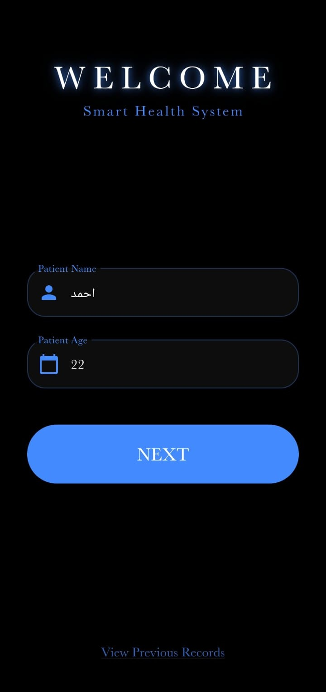
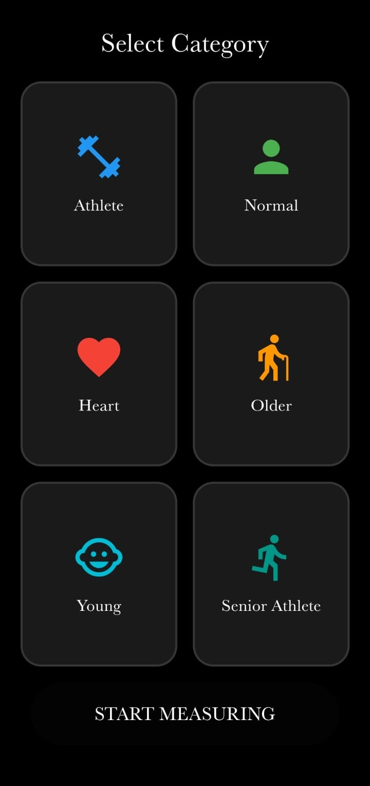
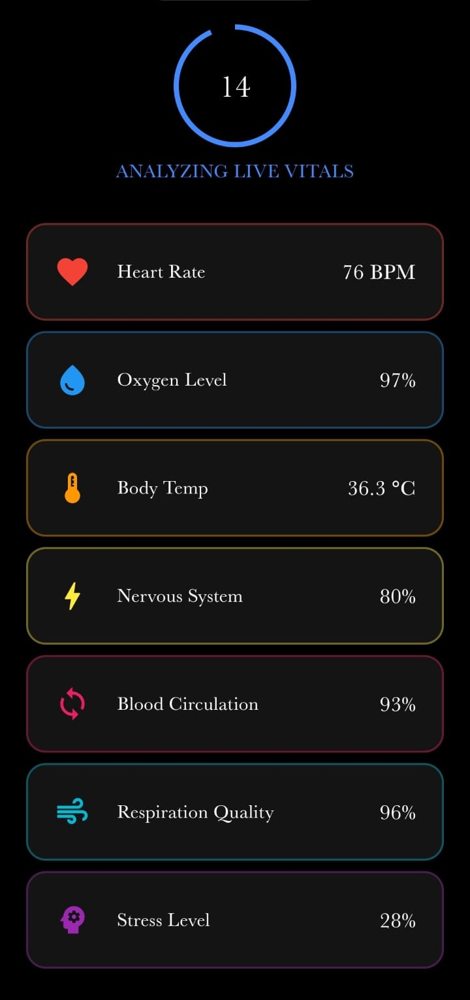
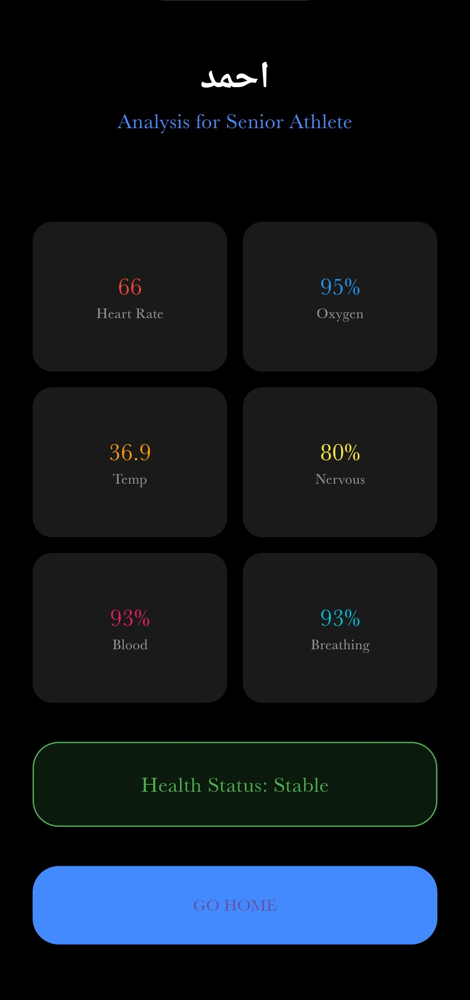

نظام ذكي متكامل يربط حساسات الأردوينو بتطبيق هاتفك لمراقبة العلامات الحيوية لحظة بلحظة بدقة فائقة وتحليل ذكي لحالتك الصحية.

شرح تفصيلي لكيفية عمل النظام الذكي خطوة بخطوة
يقوم المستخدم بإدخال اسمه وعمره لتخصيص التحليل الصحي بناءً على بياناته الشخصية.

اختيار الفئة يضمن دقة النتائج بناءً على معايير مرجعية مختلفة لتحليل البيانات.

يتصل التطبيق بالأردوينو ويعرض نبضات القلب والأكسجين في الوقت الفعلي برسوم متحركة.

يقوم التطبيق بتحليل الأرقام ويقدم حكماً نهائياً على الحالة الصحية فوراً.
وحدة المعالجة المركزية التي تقرأ البيانات من الحساسات بدقة.
جسر التواصل اللاسلكي لنقل البيانات بسرعة من الأردوينو للهاتف.
الواجهة التي تستقبل وتحلل البيانات وتعرضها بشكل مفهوم.